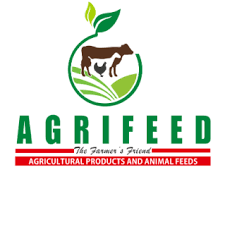
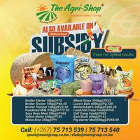
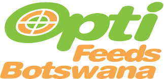

Local Agricultural Shops
Explore local agricultural shops near you:
-

Agrifeed
Agrifeed is a trusted name in the agricultural industry, dedicated to providing high quality animal feed solutions. With the focus on nutrition and sustainability, agrifeed delivers a wide range of feeds tailored to the specific needs of livestock. Their commitment to excellence ensures healthy and thriving animals, supportive farmers in their quest for optimal productivity and profitability. Choose Agrifeed for superior feed that nourishes your animals and fuels your success.
-

Feed Centre Botswana
We are Feed Centre AKA The Agri Shop: Gaborone West Industrial, Plot 22013 along Kgomokasitwa road, that is Seabelo and Central Medical Stores street. Between Iveco and Sunita Cables.
-

OPTI FEEDS BOTSWANA
Opti Feeds Botswana is an animal feeds manufacturing company providing a wide variety of monogastric and ruminant feeds where on annualized basis 95% of the production is solely for the chicken feed market and the balance accounting for ruminants’ feeds (cattle, sheep and goats).